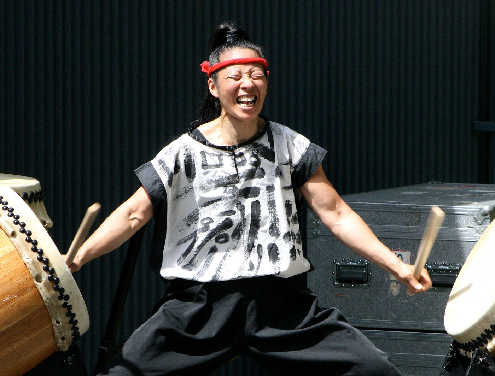
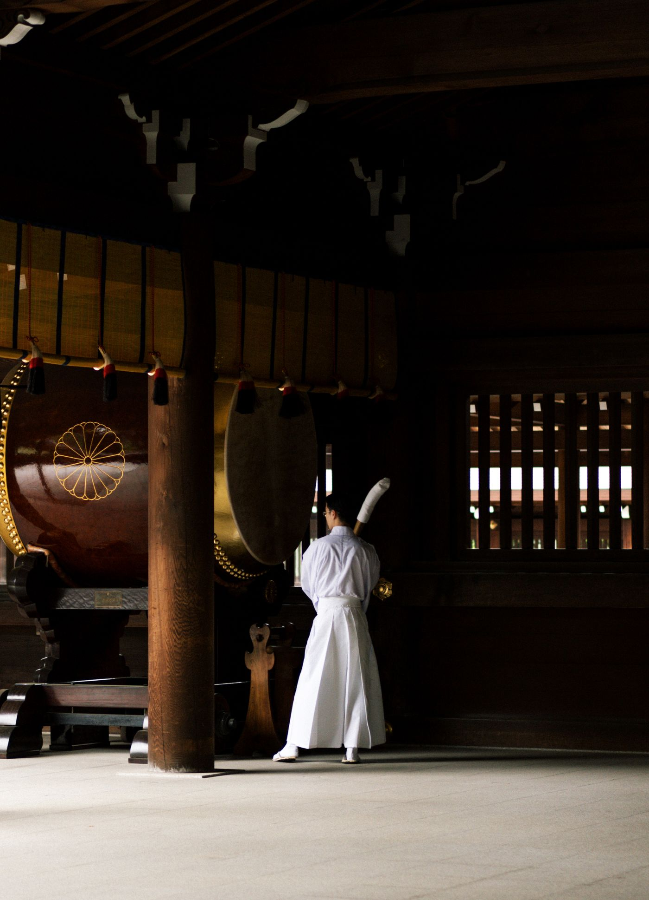

The player · The drums · The working facts
Counted movement, carried weight.
Taiko looks like hitting a drum. It is actually three jobs at once: keeping the count in your body, moving like the phrase means it, and shifting 80 kilograms of barrel before any of that starts. This page is the working half of the portfolio — who Kenji Mori is, what the drums are, and what a booker needs to know before the van is loaded.
Kenji Mori
Fictional, like the ensemble — the training path described is the real one taiko players walk.
Kenji Mori started at fourteen, carrying drums for his neighbourhood matsuri group in Asakusa before he was allowed to play one. That order — carry first, play later — is still how the ensemble teaches. Four years of carrying, counting and shime-keeping came before his first nagado part; the odaiko came a decade after that.
He trained with a community taiko group through school, then spent six seasons as a working member of a professional touring ensemble — festival stages in summer, school gyms in winter — before founding Ensemble Hayate in Tokyo with five players from that circuit. He leads from the shime chair when the full group plays: the smallest drum, the one everybody else listens to.
His teaching work — the school residencies and lecture-demos — comes from the same belief the pattern board is built on: anyone can learn a phrase if it is spoken before it is struck. Kuchishoga is not a quaint tradition. It is the fastest known way to put a rhythm into a room full of people.
Press kit (EPK)
Festival programmes and school newsletters may use either biography below, word for word. A one-page stage plot and the full drum register are sent with every confirmed booking.

Short bio — 50 words, for programme listings
Kenji Mori leads Ensemble Hayate, a six-player taiko group based in Tokyo. Trained from age fourteen in his neighbourhood matsuri group, he plays shime and odaiko, teaches school residencies across the city, and is known for sets planned like programmes: every drum, count and minute accounted for fully in print.
Long bio — for festival books & press
Kenji Mori (b. Tokyo) began taiko at fourteen, carrying drums for the Asakusa neighbourhood matsuri group before being handed sticks. Six seasons with a professional touring ensemble followed — summer festival stages, winter school gyms — before he founded Ensemble Hayate with five players from the same circuit. The ensemble's signature is planning made visible: printed set lists with stopwatch timings, a drum register with weights and footprints, fees published without being asked. Mori's own chairs are the shime-daiko, the small rope-tensioned drum that keeps time for everyone, and the odaiko, the 91-centimetre barrel drum he waited ten years to be trusted with. His school residencies teach real phrases by voice first — kuchishoga before bachi — and end with students performing unaccompanied.
The register — all eleven
Weights are with stands, as carried. Tuning and re-skinning are real recurring costs; they are part of why the fees are what they are.
Table — the drum register · scrolls sideways on small screens
| Drum | Head | Weight | How it is played | Care |
|---|---|---|---|---|
| Odaiko × 1 | Ø 91 cm | ≈ 80 kg on its stand | Upright on a stand, thick bachi, both heads; two players trade off on long pieces | Re-skinned by its Tokyo maker every few years; travels upright, strapped, in the long van |
| Nagado-daiko × 4 | Ø 45 cm | ≈ 18 kg each | The long-bodied workhorse — on tilted stands for the low Miyake stance, upright for festival pieces | Heads checked before every set; a split head is a maker's repair, not a roadside one |
| Okedo-daiko × 3 | Ø 36 cm | ≈ 7 kg each | Rope-tensioned barrel drums carried on a shoulder strap (katsugi) and played while moving | Ropes re-tensioned before each performance; never played in rain — see Case 01 |
| Shime-daiko × 2 | Ø 33 cm | ≈ 6 kg each | Small, high, rope-tensioned; thin sticks. The timekeeper's drum — it cues every change | Rope tension sets the pitch; tuned at soundcheck, checked again at the interval |
| Chappa & atarigane | — | Hand-carried | Hand cymbals and a small struck gong — the bright edge over the drums | Polished, padded, and counted in and out like everything else |

Stage, transport, volume
The three things bookers ask about after the fee — answered before you have to ask.
Stage footprint
The full set needs 8 × 5 metres of clear, level stage; the odaiko stand alone takes 1.5 × 1.5 m and cannot sit on a slope. The half set fits 5 × 4 m. Load-in is 90 minutes before soundcheck for the full set — the drums are carried, not wheeled, and stairs add time we will quote honestly rather than discover on the day.
Transport
One long-wheelbase van carries all eleven drums and six players' kit. The odaiko travels upright and strapped; it does not go on its side, in a car, or up a spiral staircase. If your venue's access is unusual, tell us at enquiry stage — we have played a shrine courtyard, a ferry deck and a school roof garden, and each one started with an honest conversation about the route in.
How loud is it, honestly?
Outdoors, an odaiko at full stroke is around 110 dB at three metres — you feel it in your ribs, which is rather the point, and it carries across a festival field without amplification. Indoors is a different instrument: for halls we play the hall set — thinner bachi, nagado-led, the odaiko voiced down — and we say which version you are booking in the quote, in writing. If your venue has a noise limit, give us the number and we will tell you plainly whether the full set fits under it.
Rehearsal structure
The ensemble rehearses twice a week, phrase by phrase, kuchishoga spoken before anything is struck — the same method as the school residencies. New pieces enter the set only when they can be played at tempo, in the dark, three times running. Collaborations add joint rehearsal days, quoted per day, because interlocking timings are built, not improvised (see Case 03).
Booking terms
- Lead times. Festival season (July–August) books out about four months ahead; school residencies need a term's notice so sessions can sit inside the timetable. Off-season, a month is usually enough.
- Deposit. 30% confirms the date; the balance is due on the day. The date is not held without the deposit — one August Saturday is currently held on a committee's word, and the calendar says so.
- Cancellation. Cancel more than 60 days out and the deposit moves to a new date. Inside 60 days the deposit is kept; inside 14 days, half the fee — the players and the van were committed either way.
- Weather. Outdoor bookings include the rain plan in writing from the first quote: which drums move under cover, which piece shortens, who holds the call. Skins and rain do not mix, and no fee buys an exception.
- What we need from the venue. The stage dimensions above, a covered holding area for the drums from load-in to load-out, and one parking space for a long van, close to the stage door.